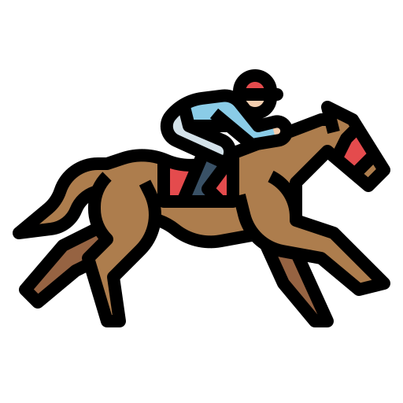

Logistics Clothing Drive Derby
Who will win the race to a pie in the face?
Vote for a leader to win by
donating clothing to their bag in AP4-200
OR
donating to their Benevity page
between April 20-23!
Scoring:
1 point = $5 Benevity donation
OR
1 point = 1 clothing item
(1 clothing item is 1 shirt, 1 pair of shoes, etc.)
All clothing and monetary donations go to
Family Scholar House
.
The leader with the most points gets a pie in the face!
This tracker will be updated daily.